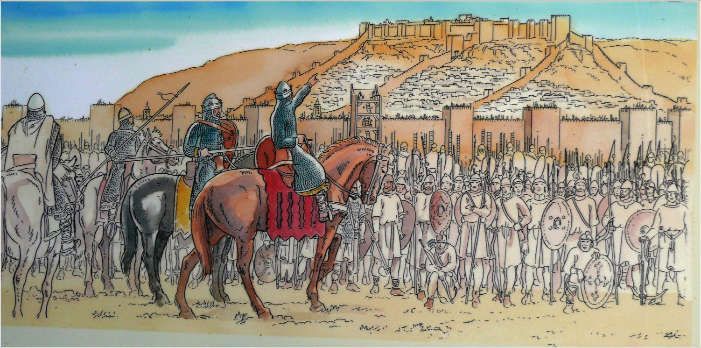
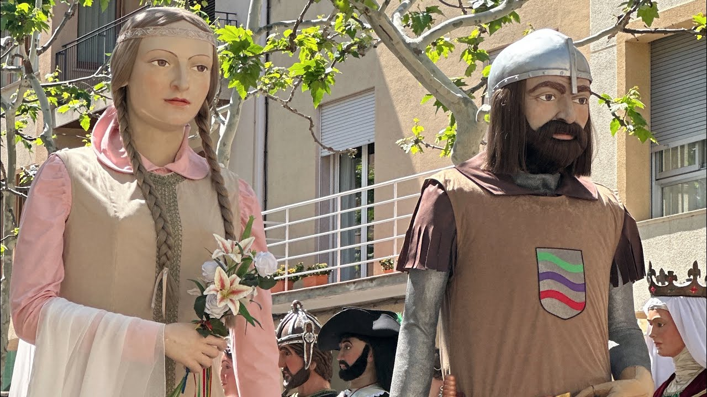

El Rescat de les 100 Donzelles
Unint la història medieval de Bagà amb les costes de Vila-seca a través de l'esport i la germanor.
 Bagà
Bagà
 Vila-seca
Vila-seca
Unint la història medieval de Bagà amb les costes de Vila-seca a través de l'esport i la germanor.
Bagà
Vila-seca
Cap a l'any 1147, el noble cavaller Galceran IV de Pinós i el seu fidel vassall Sanc van partir cap a la conquesta d'Almeria sota les ordres del comte Ramon Berenguer IV. Durant la batalla, van ser fets presoners per les forces sarraïnes i empresonats durant cinc anys[cite: 3].
Per concedir la seva llibertat, el rei de les terres d'Almeria va exigir un rescat desmesurat i exorbitant: 100 donzelles verges de la Baronia de Pinós (Bagà), 100 cavalls blancs, 100 bous o vaques parides i 100 peces de fina tela d'or i seda[cite: 3].
Quan la dolorosa caravana de les donzelles i el ramat va recórrer tota Catalunya des del Pirineu fins a la costa de Salou i Vila-seca per lliurar el pagament, va esdevenir el miracle[cite: 3]: la nit abans del lliurament, Sant Esteve i Sant Genís es van aparèixer a la presó d'Almeria, van trencar les cadenes de Galceran i Sanc i els van transportar de forma miraculosa fins a Vila-seca[cite: 3]. En trobar-se els cavallers alliberats amb la comitiva al territori de Vila-seca (on avui dia s'erigeix el monument del Piló del Rescat), la caravana de les 100 donzelles va poder emprendre el camí de retorn sana i salva cap a les muntanyes de Bagà[cite: 3, 8].

La Batalla d'Almeria (1147)[cite: 3, 17]

La Caravana de les 100 Donzelles al Pont[cite: 3, 15]

Miracle de Sant Esteve (Retaule Gòtic)[cite: 3, 19]

Vitrall Commemoratiu d'El Rescat (1945)[cite: 3, 16]

Galceran IV de Pinós (Bagà)[cite: 18]

Gegants Tradicionals de Bagà[cite: 14]